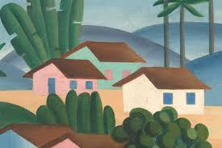
Tarsila do Amaral
Referência do modernismo brasileiro, sua obra conecta identidade nacional, cor e inovação estética.
arte • imagem • linguagem
A arte organiza memória, gesto e matéria em experiências que transformam o olhar sobre o mundo.
A arte é uma forma de produção cultural porque cria significados, preserva referências históricas e revela maneiras de sentir, ver e interpretar a realidade. Pintura, fotografia, instalação, performance e cultura visual participam da construção da identidade coletiva.
As obras de arte funcionam como registros de época, gosto e visão de mundo. Em diferentes formatos, elas ajudam a preservar memórias e a ampliar a percepção do público sobre o presente.

Referência do modernismo brasileiro, sua obra conecta identidade nacional, cor e inovação estética.
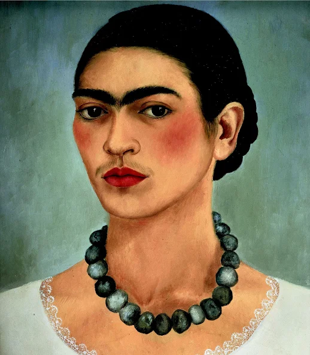
Suas pinturas e autorretratos tornaram-se símbolos de expressão pessoal, dor, força e identidade cultural.
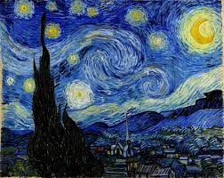
Um nome que atravessou a história da arte pela intensidade do gesto, da cor e da emoção visual.
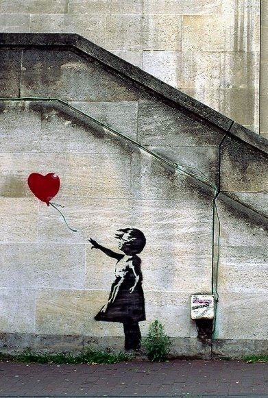
A arte urbana mostra como a rua também pode ser palco de crítica, ironia e intervenção cultural.
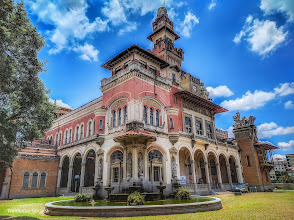
Espaços fundamentais para a preservação, circulação e leitura pública das obras de arte ao longo do tempo.
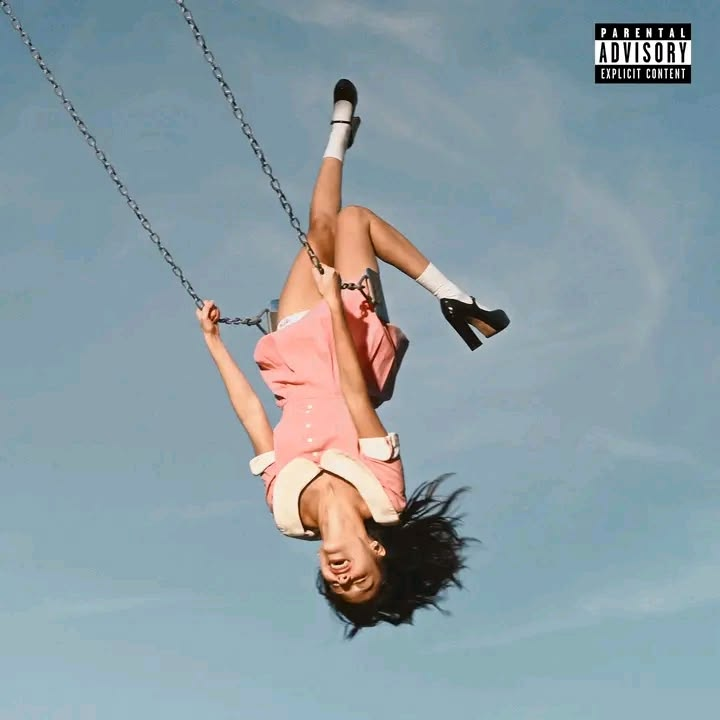
Uma estética emocional e confessional que dialoga com a cultura jovem e com o universo digital de divulgação musical.
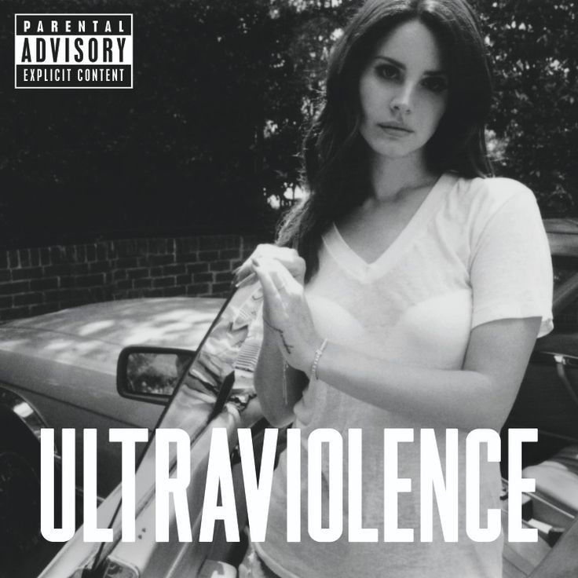
Uma imagem autoral que combina melancolia, romantização do passado e um forte sentido de narrativa visual.
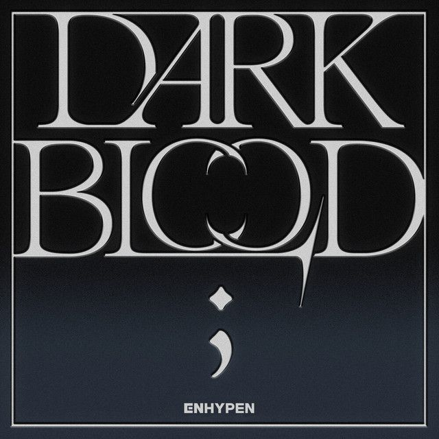
O universo do K-pop mostra como performance, estética e fandom se articulam como fenômeno cultural global.
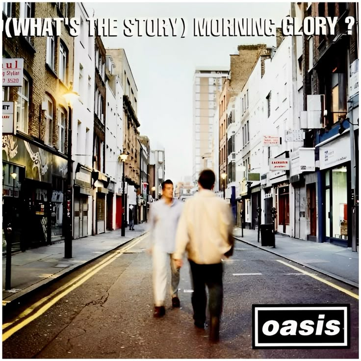
Um marco do rock britânico que continua influenciando imaginários musicais e referências visuais de outras gerações.
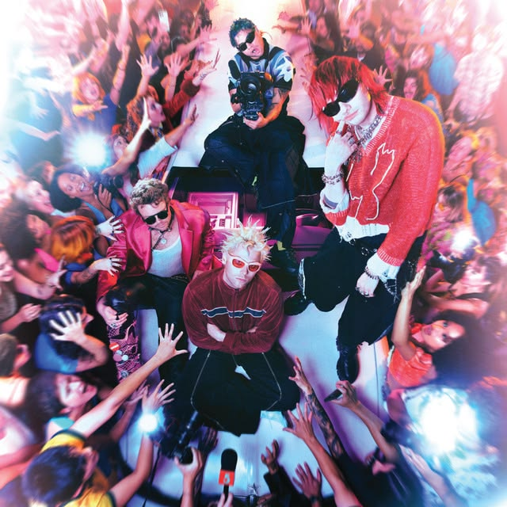
Mostra como a circulação musical contemporânea mistura banda, imagem pública e conversa contínua com o público.
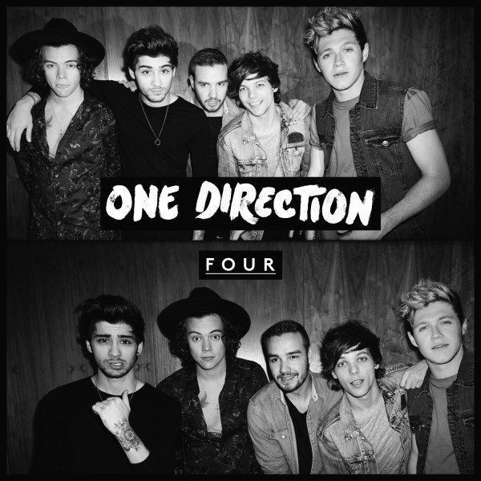
Um exemplo de como grupos musicais também podem organizar memória afetiva e cultura pop compartilhada.
Arte e cultura se encontram em registros visuais, musicais e urbanos que ajudam a contar quem somos. A cada obra, uma nova camada de memória se soma ao arquivo cultural.